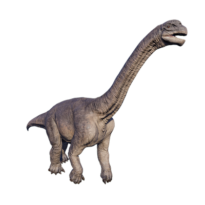

Useful Website
At a weight of over 51 tonnes and measuring more than 18m in length, the Camarasaurus is one of the largest sauropods and is easily recognised thanks to its distinctive blunt nose. Camarasaurus is a herbivorous sauropod and is related to more well-known dinosaurs including Diplodocus and Brachiosaurus. In fact, Camarasaurus is a more commonly found genus than its more famous relatives.
